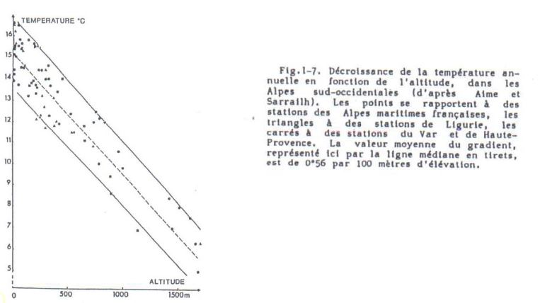
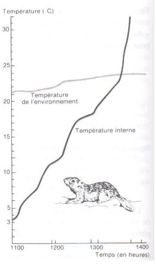

Influence de la température
A) Généralités
Température = élément majeur (avec humidité) des macro-climats terrestres
-
hemisphère Sud : isothermes annuels ~ parallèles à l'équateur en raison des masses maritimes
-
hémisphère Nord : isothermes plus irréguliers masses continentales plus importantes
Température moyennes annuelles les plus fortes: >30°C en Afrique (contient le plus chaud)
Régions intertropicales = températures élevées mais les variations journalières sont supérieur aux variations annuelles (pluies abondantes)
Régions extratropicales = régime thermique bien marqué
- Nord : chaud en juillet/août, froid en janvier
- Sud : inverse (pluies moins importantes sauf massifs montagneux)
Intervalle thermique dans lequel la vie est possible :
- 200°C et + 100°C
Certaines formes de durée de vie supportent des - 180°C :
- Spores de cryptogames
- Kystes de nématodes
Survie rendue possible par leur faible teneur en eau = anhydrobiose
Ex: Strain 121
Organisme unicellulaire appartenant aux Archées découverte en 2003, capable de survivre et de se reproduire à des températures extrêmes.
Localisation : évents hydrothermaux sous marins
Conditions :
- obscurité totale
- eau bouillonnante (réchauffée par le magma) 121°C
- eau reste liquide en raison des fortes pressions 240 bars
- respire des oxydes de fer pour transformer sa nourriture, rejette de la magnétite
Particularité : Si la température est inférieure à 80°C, Strain 121 entre en dormance, elle survit après 2h passées à 130°C
B) Propriétés thermiques
Grandes différences entre les milieux naturels à température égales, car cela dépend des conditions physiques des milieux.
Propriétés caractérisées par :
- capacité calorique : quantité en énergie nécessaire pour élever de 1°C un volume de 1cm3 d'un corps
eau >> humus >> silice > air
-
diffusion thermique : inversement proportionnelle à la capacité calorique, elle dépend de la conductivité du corps considéré et varie avec:
-
humidité
- porosité
- composition des matériaux
Le régime thermique du sol est très important en écologie
- influence des microorganismes, de la pédofaune...
- croissance
- reproduction
- activité physiologique
Il dépend:
- du bilan énergétique du système sol - atmosphère
- couvert végétal
- des caractéristiques propres du sol :
- réflectance de la surface
- constituants solides
- porosité
- humidité
C) Température du sol et ses variations
Variations journalières

-
Les variations de températures diminuent rapidement avec la profondeur des sols
-
Au delà de 50 cm de profondeur, on a une absence de variation
Variations saisonnières
- Concerne des épaisseurs de sol beaucoup plus importantes
Ex : sols en zones boréales pouvant atteindre 1m de profondeur (permafrost)
D) Température de l'air

Diminution de la température avec l’augmentation de l'altitude: 100m de dénivelé équivaut à une diminution de ~ 0,56°C
Les variations journalières au contact des surfaces (sol, végétation...) provoque la création des variations verticales de température :
- élévation de haut en bas le jour
- élévation de bas en haut la nuit
Influence par le couvert végétal
- le flux de chaleur dépend :
- surface foliaire
- ventilation intervenant dans le couvert de végétation
La végétation rase ouverte : température max atteinte à la surface du sol
La végétation dense : température max au sommet de la végétation
E) Température et milieux aquatiques
La température dépend :
- échanges thermiques et radiatifs avec atmosphère
- déplacement des masses d'eau qui se font
- sous l'action de l'eau
- densité de l'eau (salinité)
Ex: Lac profond en zones tempérées ou froides
- stratification thermique
- variable avec les saisons
- différente selon les conditions du climat
![Mouvement de l'eau et stratification thermique] (Images/mouvementdel'eau.JPG)
Ce sont des lacs dimictiques par opposition aux lac monomictiques qui présentent une stratification constante.
Sous les tropiques : lacs holomictiques = pas de stratification car pas de saison froide
D'autres facteurs influent sur le fonctionnement d'un lac:
- vent
- courants
Rôle des océans
- 70% de la surface de la Terre (rôle capital sur la répartition des climats)
- absorbent environ 80% du rayonnement solaire (évaporation importante au niveau de leur surface)
F) Action de la température sur les végétaux
Influence de tous les processus biologiques et métaboliques :
- croissance
- photosynthèse, respiration
- reproduction, survie..
-> repartition des espèces
Action de la température sur la croissance = résultante de son action sur :
- photosynthèse
- activation enzymatique respiratoire
Action sur fixation du CO2
- fixation maximale pour les espèces tempérées : entre 20 à 30°C
- fixation maximale pour les espèces montagnardes et subarctiques : entre 10 à -13°C
- fixation maximale pour les espèces des climats chauds: autour de 40°C (plantes en C4)
1) Importance des températures extrêmes
Les températures froides
-
nécessité de s'adapter pour résister aux températures basses
- ex : vie ralentie sous forme de :
- graines,
- spores,
- tubercules,
- bulbes
- ex : vie ralentie sous forme de :
-
organismes végétaux aux cytoplasmes riches en eau vont être tués par le gel
Remarques :
- différence entre température minimale de survie et température minimale de croissance
- température létale = température à laquelle la moitié des individus est tuée
Quelques exemples de température minimale de survie :
- Algues marines tropicales = entre + 5 et + 15°C
- Algues des mers froides = - 10 à - 40°C
- Plantes vasculaires tropicales = +5 à - 2°C
- Plantes vasculaires tempérées = - 10°C à - 20°C
- Plantes vasculaires zones boréales = au dessous de – 20°C
- Certains lichens en état de déshydratation peuvent résister à - 80°C
Les températures chaudes
Altérations irréversibles = thermodénaturation
Remarques :
Température maximale d'activité : variables selon les espèces
- une dizaine de °C : algues unicellulaires des névés
- 70°C : cynaophycées (eaux thermales)
- 80°C : bactéries thermophiles
- 45°C : plantes vasculaires tuées très rapidement
- 55°C : survie des Cactées et quelques espèces méditerranéennnes à feuilles persistantes
2) Importance du thermo - périodisme quotidien sur la croissance et la reproduction
Germination plus rapide : si la température oscille autour d'une valeur moyenne/ à une température constante
Ex : Rendement optimal de tomates
- température diurne de 26,5°C
- température nocture de 17 à 19°C
Alternance de température: favorable à la levée de dormance des embryons et des bourgeons
Alternance de température peut remplacer l'action de la lumière sur la levée de dormance des graines photosensibles
3) Importance du thermopériodisme annuel
Le rôle essentiel des variations saisonnières sur la phénologie des espèces
- possible de tracer des isophènes où une spèce atteint un stade phénologique à une date t
- comparaison des isophènes aux isothermes -> cartes prévisonnelles de developpement des espèces
- possible de dresser des cartes montrant l'état d'avancement ou de retard de la végétation en fonction de sa localisation
Ex : Phénologie des cultures en France continentale (d’après Le "Bon Jardinier")
Règle de la somme des températures : prévision des stades phénologiques en considérant la somme des températures
Ex : végétation prairiales :
- montaison = 1500°C
- épiaison = 2500°C
- floraison = 3000 °C
4) Action de la température sur la distribution des espèces
Température = facteur majeur de la répartition
- contraint certaines phases du developpement biologique
- notion de facteur limitant
La limitation de la répartition des espèces peut -être liée :
- excès de froid : limite de l'extension liée au minima critique de survie
ex : Garance, Hêtre
- insuffisance de chaleur : limitation de l'extention des espèces vers les hautes latitudes -> manque de chaleur en saison estivale
Ex: Epicea, Chêne pédonculé, vignes
Il n'y a pas de maturation des fruits dans les régions plus nordiques.
La limitation des espèces peut-être liée :
- excès de chaleur : bilan hydrique déséquilibré = transpiration excessive ou alimentation en eau insuffisante
- insuffisance de froid : nécéssité chez certaines espèces de subir une vernalisation
G) Action sur les animaux
La température agit sur les animaux
- cycle de vie
- répartition
Les réactions sont d'ordre
-
écologique
- migration géographique
- enfouissement en profondeur
- activité nocture plutôt que diurne
-
physiologique
- acclimatation vie des modifications métaboliques
Ex : augmentation du glycérol dans les tissus de certains insectes
- morphologique
Il existe trois règles morphologiques sur les espèces homéothermes
- règle de Bergman : accroissement de la taille et donc de la masse
- animaux de grandes tailles -> climats froids
- animaux de petite taille -> climats chauds
Grande taille : le rapport surface/volume est faible, la perte de chaleur par convection est faible
- règle d'Allen : en climat froid, on a une réduction des membres et appendices par rapport aux animaux équivalents des climats plus chauds : surface des oreilles, cou, pattes, la queue (formes trapues)
Ex des renards : Fennec des déserts chauds possède de grandes oreilles, le renard de nos régions possède des oreilles moyennes et le renard arctique possède des oreilles minuscules et museau court
- règle de la fourrure : les animaux des climats froids ont la fourrure plus epaisse (compensation d'une insuffisance d'isolation thermique : hibernation)
Ex: belette, Lemming...

Rupture de l'hibernation chez un spermophile nord américain Citellus undulatus (Ecureuils terrestres)
En fin d'hibernation, lorsque la température atteint 20°C, le corps du rongeur passe de 3,5 °C à 17,5 °C en 1h30
Réactions chez les hétérothermes
- nanisme (faune des montagnes)
- mélanisme (faune des montagnes) : coloration pigmentaire plus foncée : augmentation de la chaleur captée
- aptérisme : faune insulaire (insecte, oiseaux)
Autre relations : plantes - animaux
Les animaux utilisent les micro-climats en présence des plantes